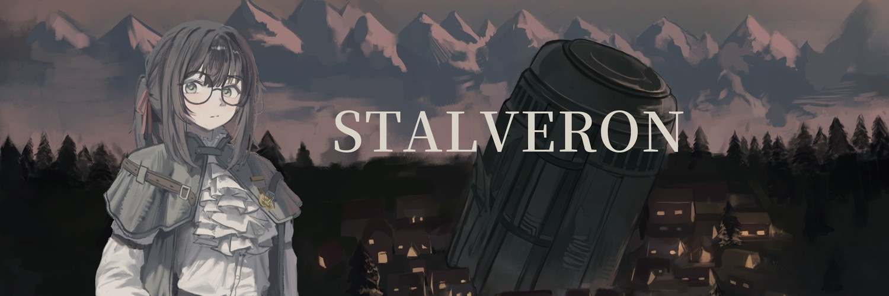

Emberseed
Emberseed2026.11.06 안녕하세요. 처음 뵙겠습니다.
안녕하세요. 처음 뵙겠습니다. Emberseed입니다.
2026년 4월부터 시작해서 지금까지 대략 7개월간 저희의 첫 작품인 STALVERON 제작을 진행하였고, 메인 시스템과 게임 루프가 치명적인 버그 없이 순환되는 알파 버전이 완성되었습니다.
STALVERON은 관전형 던전 설계 게임으로, 플레이어는 던전에 들어오는 4명의 탐사대의 능력치, 성격, 직업 등 각종 정보들을 관제 텐트에서 확인하고 얼마나 다치게 하여 돌려보낼지 목표치를 직접 설정하여야 합니다. 이후 실행 단계에서 탐사대들을 자신이 설정한 목표치에 맞추기 위해 함정을 선택하고 적절히 설치하여 그들을 돌려보내야 합니다.
탐사대는 자신들의 상황과 조건에 맞추어 움직입니다. 플레이어는 그들을 관찰하여 플레이어블 캐릭터인 정비기를 움직여 함정을 추가 설치하거나 수리하여 대응하여야 합니다.
STALVERON은 총 10개의 장으로 구성되어 1개의 장마다 90분 정도의 플레이 타임을 예상하여 15시간 정도의 총 플레이 타임을 목표로 개발을 진행하고 있습니다.
저희의 목표는 탐사대마다 달라지는 공략 방식을 관찰하고 연구하여 결국 자신의 계획대로 진행되는 쾌감을 여러분께 선사하는 것입니다.
앞으로 개발 중점은 UI 개편과 함께 3D 모델링 및 애니메이션 구현 강화를 주 목표로 두어 개발할 예정입니다. 가능하다면 개발 로드맵을 구성하여 빠른 시일 내로 올려 드리겠습니다.
STALVERON은 Emberseed 세계관의 후반 시점을 주 무대로 하고 있으며, 새롭게 찾아온 빙하기에서 사람들이 어떻게 살아가는지, 어떤 갈등이 있는지, 마법과 기술이 혼재된 스팀펑크풍 아포칼립스 세계를 기대해 주셨으면 좋겠습니다.
개발일지는 기본적으로 격주 연재를 원칙으로 하며, 새로운 소식이 생길 때마다 개발 현황을 공유드리겠습니다.
다시 한번 관심에 감사드리며, Emberseed 유니버스와 STALVERON을 기대해 주셨으면 좋겠습니다.
감사합니다.
